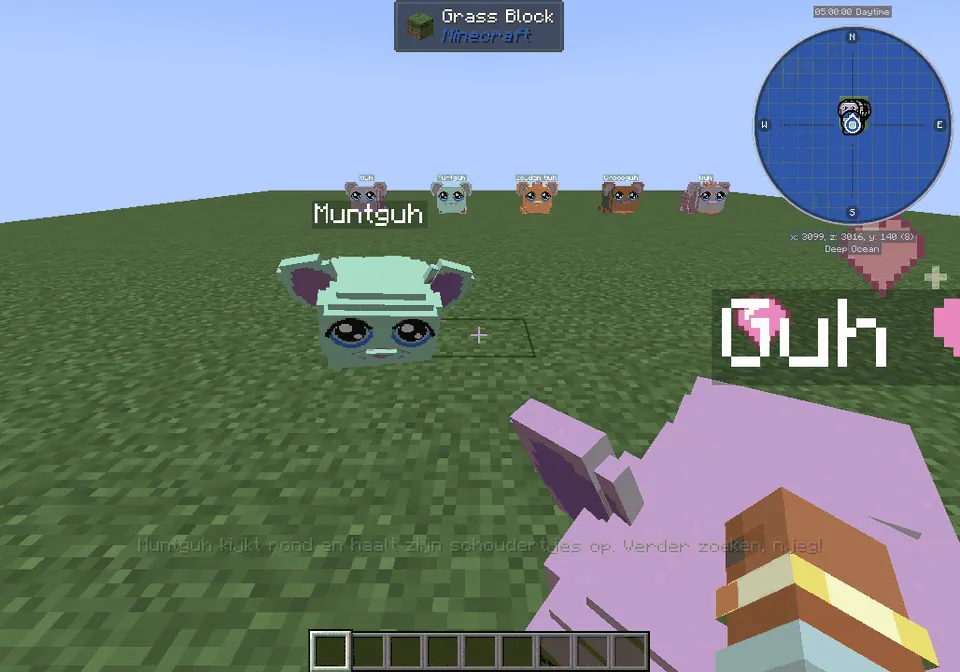
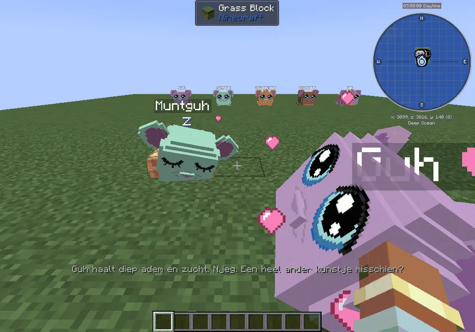
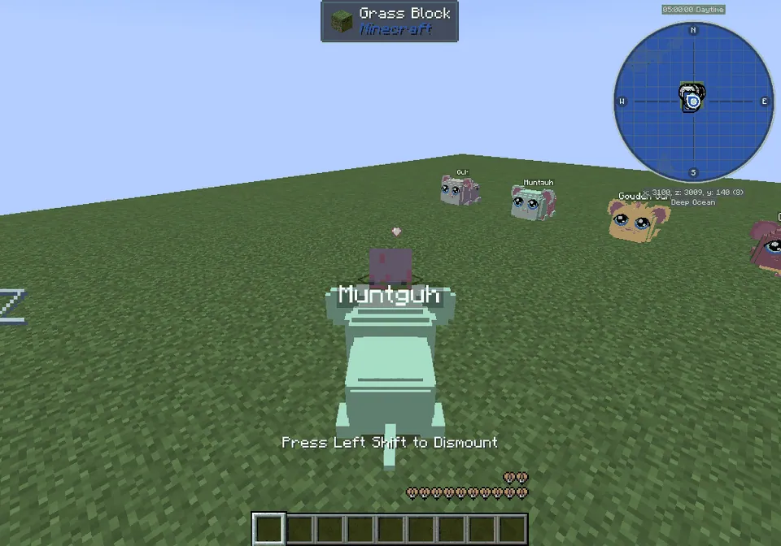
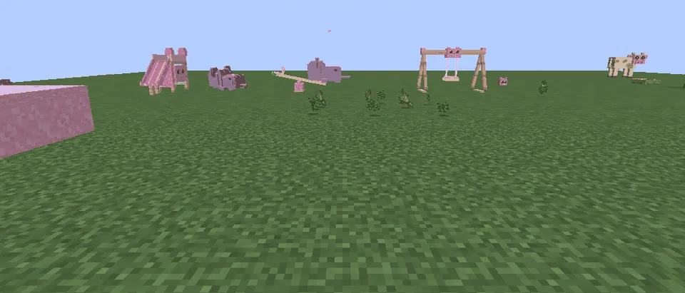

Your guhs cheer for you in minigames, ride along on the back and make friends with each other.
Je guhs juichen je toe bij minigames, rijden achterop mee en sluiten vriendschap met elkaar.
Cheering in the minigamesJuichen bij de minigames
Play a minigame with your own guh nearby (within 24 blocks) and it plays along: a good throw, catch or time gives a VAHOEG jump with little hearts and a cheer; a miss gives a lovingly sad ooh njeg... (never cross!); a record gets the knuffeldansje. At the start it waves succes!, and every game together gives hearts and a dagboekje line (all 23 minigames).
Speel een minigame met je eigen guh in de buurt (binnen 24 blokken) en hij speelt mee: een goede worp, vangst of tijd geeft een VAHOEG-sprongetje met hartjes en gejuich; mis geeft een lief verdrietig ooh njeg... (nooit boos!); een record krijgt het knuffeldansje. Bij de start zwaait hij succes!, en elk spelletje samen geeft hartjes en een regel in het dagboekje (alle 23 minigames).

Ooh njeg...
A miss: ears down, a tiny tear. A cuddle helps.Mis: oortjes omlaag, een klein traantje. Een knuffel helpt.

A record!Een record!
The knuffeldansje, with hearts and notes.Het knuffeldansje, met hartjes en noten.

Achterop!
In the race and on the Guh-Circuit your guh (the one with the most hearts) hops on the back of the kart, cheers every lap and goes back where it was afterwards.Bij de race en op het Guh-Circuit springt je guh (die met de meeste hartjes) achterop de kart, juicht elke ronde en gaat daarna terug naar waar hij was.
Samen
- Really joining in: it skates next to you on the Elf-Guhjestocht (snow sprays!), and jumps into the Knuffelbad to swim beside you (and cheers from the side while you go down a slide). At sjoelen, the katapult, golf and the rest it cheers.Echt meedoen: hij schaatst naast je op de Elf-Guhjestocht (sneeuwspetters!), en springt in het Knuffelbad om naast je te zwemmen (en juicht vanaf de kant als jij van een glijbaan gaat). Bij sjoelen, de katapult, golf en de rest juicht hij.
- Welcome home: back after a long time? A welcome-back dance. After dying: the guh with the most hearts waits at your respawn with a comfort hug. Thunder: it walks to you and cuddles up close. Going to bed: your guhs wave you goodnight.Welkom thuis: na lange tijd terug? Een welkom-terug-dansje. Na doodgaan: de guh met de meeste hartjes wacht bij je respawn met een troostknuffel. Onweer: hij loopt naar je toe en kruipt dicht tegen je aan. Naar bed: je guhs zwaaien je welterusten.

Guh friendshipsGuh-vriendschappen
Tamed guhs of yours that spend a lot of time together become vriendjes, and later beste vriendjes (a real bff duo). Friends walk together, cuddle each other (hearts between them), seesaw and swing together on the wip and schommel, and sleep side by side in the same huisje. Being close, cuddling, playing and a night together all count; it only ever grows. The Mijn guhs page shows each guh's friends, with a ★ for the bestie.
Tamme guhs van jou die veel samen zijn worden vriendjes, en later beste vriendjes (een echt bff-duo). Vriendjes lopen samen, knuffelen elkaar (hartjes ertussen), wippen en schommelen samen op de wip en de schommel, en slapen naast elkaar in hetzelfde huisje. Dichtbij zijn, knuffelen, spelen en een nachtje samen tellen allemaal mee; het groeit alleen maar. De Mijn guhs-pagina laat de vriendjes van elke guh zien, met een ★ voor de bestie.
At a glanceIn het kort
- AdvancementsVooruitgangen
- Hup, hup, VAHOEG! · Samen gespeeld · Een dansje voor je record · Achterop! · Schaatsmaatjes · Zwemmaatjes · Welkom thuis! · Guh-vriendjes · Beste vriendjes ★ · Een speldje met een hartje · Het knuffeltruitje · Een kroontje voor je zielsguh ★ · Het gouden hartjes-halsbandje ★ · Bff-knuffel ★